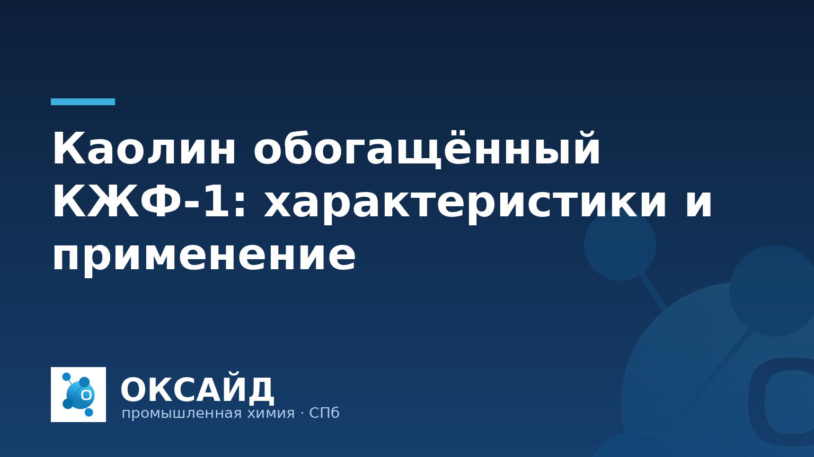

Каолин обогащённый КЖФ-1 — это тонкодисперсный алюмосиликат, прошедший специальную обработку для улучшения его физико-химических свойств. Он представляет собой высококачественное минеральное сырье, востребованное в различных отраслях промышленности благодаря своим уникальным характеристикам: высокой белизне, химической инертности, контролируемому гранулометрическому составу и низкой абразивности. Понимание этих свойств и областей применения критично для специалистов по закупкам и технологов, стремящихся оптимизировать производственные процессы и качество конечной продукции.
Каолин — природный глинистый минерал, состоящий преимущественно из каолинита. Процесс обогащения направлен на удаление примесей (оксидов железа, титана, кварца), улучшение белизны и оптимизацию распределения частиц по размеру. Марка КЖФ-1 обозначает каолин, прошедший такую обработку, что обеспечивает ему стабильные и высокие эксплуатационные качества.
Основные характеристики КЖФ-1:
Благодаря своим улучшенным свойствам, каолин КЖФ-1 находит применение в целом ряде промышленных сфер:
Выбор подходящей марки каолина КЖФ-1 зависит от конкретных требований производственного процесса и конечного продукта. Важно учитывать такие параметры, как белизна, гранулометрический состав, содержание примесей и влажность.
При закупке химического сырья, включая каолин, ключевое значение имеет надежность поставщика. ООО «Оксайд» поставляет каолин КЖФ-1 от 1 тонны, обеспечивая стабильное качество продукции и оперативную доставку по всей территории РФ. Каждая партия сопровождается паспортом качества, подтверждающим соответствие заявленным характеристикам. Ознакомиться с нашим ассортиментом можно в каталоге продукции «Оксайд».
Каолин обогащённый КЖФ-1 является стабильным продуктом, но требует соблюдения определенных условий для сохранения его свойств.
Каолин КЖФ-1 относится к обогащённым каолинам. Его отличают повышенная степень белизны, контролируемый и более тонкий гранулометрический состав, а также низкое содержание красящих примесей, таких как оксиды железа и титана. Эти характеристики делают КЖФ-1 подходящим для применений, где необходимы высокие требования к цвету, равномерности распределения частиц и химической стабильности, например, в производстве высококачественной бумаги, керамики или светлых лакокрасочных материалов.
Каолин КЖФ-1 поставляется в различных видах упаковки, ориентированных на удобство промышленного использования. Чаще всего это многослойные бумажные мешки весом от 25 до 50 кг или мягкие специализированные контейнеры (биг-бэги) вместимостью от 500 до 1000 кг. Выбор типа упаковки зависит от объёма закупки, логистических возможностей и специфики производственного процесса заказчика.
Для сохранения заявленных характеристик каолина КЖФ-1 необходимо обеспечить его хранение в сухих, закрытых помещениях. Важно исключить попадание влаги, так как это может привести к комкованию продукта и изменению его технологических свойств. Также следует избегать прямого воздействия солнечных лучей и контакта с загрязняющими веществами. Соблюдение этих условий гарантирует стабильность качества продукта на протяжении всего срока хранения.
Да, ООО «Оксайд» как поставщик промышленной химии, включая каолин обогащённый КЖФ-1, в обязательном порядке предоставляет паспорт качества на каждую отгружаемую партию. Этот документ подтверждает соответствие продукта установленным стандартам и содержит все ключевые физико-химические показатели, такие как белизна, влажность, гранулометрический состав и содержание примесей.
Свяжитесь с ООО «Оксайд» по телефону 8 (812) 320-40-09 — подберём марку и рассчитаем поставку.